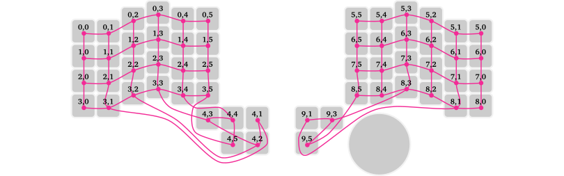

Developing QMK features
Pascal Getreuer, 2023-12-17 (updated 2025-01-11)
Overview
The QMK features on this site are “userspace feature libraries,” C libraries for adding some behavior to a keymap. Custom shift keys and Achordion are examples. The point of wrapping up a feature as a library is to make it reusable across different keymaps and to encapsulate implementation details so as to avoid cluttering the keymap. A few of these features have also been integrated into QMK itself as core features. We discuss both kinds of feature implementations here.
License
Code snippets in this post are shared under Apache 2 license.
Copyright 2023-2025 Google LLC
Licensed under the Apache License, Version 2.0 (the “License”); you may not use this file except in compliance with the License. You may obtain a copy of the License at
https://www.apache.org/licenses/LICENSE-2.0
Unless required by applicable law or agreed to in writing, software distributed under the License is distributed on an “AS IS” BASIS, WITHOUT WARRANTIES OR CONDITIONS OF ANY KIND, either express or implied. See the License for the specific language governing permissions and limitations under the License.
Userspace features
There are no strict rules about how a userspace library should be structured, so long as it compiles. It does help to follow a few conventions:
If the feature processes key events, do so with a function with the same interface as
process_record_user():bool process_cool(uint16_t keycode, keyrecord_t* record);If the feature involves running some code in
housekeeping_task_user()ormatrix_scan_user(), put that code in a “task” function:void cool_task(void);As is good C practice generally, work the feature name into the naming of every publicly visible function, preprocessor option, etc. to avoid name collisions.
Feature skeleton
To get started, here is a skeleton definition for a cool feature. Again, note that there are no strict rules about how a userspace library is supposed to be structured. This is just my formula for it. Feel free to adapt as you see fit.
features/cool.h
// TODO: Describe here...
// * What does this Cool feature do?
// * QMK features, if any, that need to enabled.
// * Configuration options.
#pragma once
#include "quantum.h"
// Handler function for Cool feature. Call this from process_record_user().
// Args `keycode` and `record` are the current key event to handle. Returns
// true if default handling should continue; false if it should be skipped.
bool process_cool(uint16_t keycode, keyrecord_t* record);
// Task function for Cool feature. Call this from housekeeping_task_user().
void cool_task(void);features/cool.c
#include "cool.h"
bool process_cool(uint16_t keycode, keyrecord_t* record) {
// Do something cool...
}
void cool_task(void) {
// Do something cool...
}In cool.h, #pragma once indicates the header should be
processed once, even if included multiple times in the same source file,
and #include "quantum.h" accesses QMK’s definitions and
APIs. Like the rest of QMK, feature code should target C11 and may make
use GNU extensions (see What is this
weird C syntax).
User instructions
Users will need to complete a few steps to use the feature in their keymap. For the skeleton above, the steps are as follows.
Step 1: In the user’s keymap.c, include cool.h and call the handler and task function.
#include "features/cool.h"
bool process_record_user(uint16_t keycode, keyrecord_t* record) {
if (!process_cool(keycode, record)) { return false; }
// Other macros ...
return true;
}
void housekeeping_task_user(void) {
cool_task();
// Other tasks...
}Step 2: In the user’s rules.mk, add
SRC += features/cool.cStep 3: In the directory containing keymap.c, create a “features” subdirectory and copy cool.h and cool.c there.
QMK core features
A QMK core feature is part of QMK itself. Examples include the items listed under the “Advanced keycodes” and “Software features” sections of QMK’s documentation. Implementation of core features follows similar patterns as those described in the previous section. For example, you can see how Repeat Key was added as a core feature in this pull request.
How to contribute a core feature
The following is an outline for how one might add a new core feature to QMK:
Discussion: Submit a feature request or start a thread on the r/olkb subreddit or on Discord to scope out interest.
Userspace prototype: Develop the feature initially as a userspace library, if feasible, and share it with others. This is a great way to experiment and get early feedback.
Move to core: Refactor the feature as a core QMK feature on your local copy of the qmk_firmware repo. Write documentation (docs/) and unit tests (tests/). Check how the feature operates when used in combination with other features.
Pull request (PR): Read Contributing to QMK and QMK’s PR checklist. Submit a PR to merge into the
developbranch. Be patient. Review often takes a few months.Release: Breaking changes, including any new core features, are made first on
develop, then released four times a year whendevelopis merged intomaster.
It is essential that QMK users be able to rely on their keyboards. New core features are reviewed and accepted at a cautious pace. The full outline above might realistically take 6–12 months depending on the feature’s complexity and reviewer availability.
Past feature PRs
It is enormously helpful to look at the PRs for existing features to see how things are done. An incomplete list:
- #19700 – Repeat Key
- #18463 – OS Detection
- #16588 – Caps Word
- #15699 – Autocorrect
- #12851 – Digitizer support
- #11422 – Key Overrides
- #11036 – Dynamic Tapping Term
- #10174 – Quantum Painter
Exposing options
Most features involve some options. Avoid baked-in assumptions about the keymap’s custom keycodes, etc., which would curtail reusability. Instead, expose options to let the user configure such things. Here are some common patterns to do that.
Preprocessor constants
Let the user #define options in their config.h:
// In config.h
#define COOL_TIMEOUT_MS 5000
// In features/cool.c
#ifdef COOL_TIMEOUT_MS
// Timeout logic...
#endif // COOL_TIMEOUT_MSThis fits well for boolean enabled/disabled options as well as timeouts and other numeric options. For a real example, see for instance Caps Word’s CAPS_WORD_INVERT_ON_SHIFT (boolean) and CAPS_WORD_IDLE_TIMEOUT (numeric).
Preprocessor options can also be used for lists of values:
// In config.h
#define COOL_SEQUENCE {3, 1, 4, 1, 5, 9}
// In features/cool.c
static uint8_t sequence[] = COOL_SEQUENCE;The Unicode feature’s UNICODE_SELECTED_MODES and Secure feature’s SECURE_UNLOCK_SEQUENCE work this way.
Callbacks
Let the user define a callback for deeper customization:
// In features/cool.h
// Defines whether Cool feature is enabled for `keycode`.
bool cool_enabled_for_key(uint16_t keycode);
// In features/cool.c
__attribute__((weak)) bool cool_enabled_for_key(uint16_t keycode) {
return true; // By default, enable for all keys.
}
// In keymap.c
bool cool_enabled_for_key(uint16_t keycode) {
// User's implemention, overrides the default implemention...
}The __attribute__((weak)) syntax in cool.c is a GNU
extension annotating the callback definition as a weak symbol. This
allows us to make a default definition of the callback that the user may
optionally override by making their own redefinition in keymap.c.
Callbacks are useful to customize per-key behavior, like Caps Word’s caps_word_press_user() to define which keycodes are word breaking. Callbacks can also enable the user to react to feature events, like Caps Word’s caps_word_set_user() to react to when Caps Word turns on or off.
Global config variable
Have the user define configurations in a global variable:
// In features/cool.h
typedef struct {
uint16_t cool_keycode;
uint8_t cool_layer;
} cool_config_t;
extern const cool_config_t cool_config;
// In keymap.c
const cool_config_t cool_config = {
.cool_keycode = COOL_KEY,
.cool_layer = COOL_LAYER,
};For example the Combos
feature uses this pattern for its combo_t key_combos[]
array.
Diagnostics
It is a fact of engineering life that fixing bugs is an expected part of development. This section describes methods for outputting debug messages.
Debug console
QMK has a Console feature to output debug information, which can be extremely helpful. How to use it:
Enable it by adding in rules.mk:
CONSOLE_ENABLE = yesAdd a
DB_TOGGkey to your keymap to enable debug mode.To print your own console messages, add
#include "print.h"at the top of keymap.c and print formatted messages with
dprintf("%s string", var);Note that this API does not support all the format specifiers of standard
printf(). For instance, uppercase hex%04Xworks, but lowercase%04xdoes not.Software is needed on the host computer to listen for the console messages. Use either the QMK Toolbox, the qmk console command, or hid_listen. Getting the listening software to recognize the device is finicky and may require system configuration. See the Console documentation for troubleshooting suggestions.
Press
DB_TOGG. This should show a message “DEBUG: enabled” and begin displaying yourdprintf()messages.
Alternative: typing out debug messages
If you can’t (or don’t want) to use Console, a primitive alternative
is to type out messages with send_string(). An easy way to
do that is in combination with snprintf():
// Type the HSV coordinates for the current RGB matrix color.
char buffer[20];
snprintf(buffer, sizeof(buffer),
"HSV: " PRIu8 ", " PRIu8 ", " PRIu8,
rgb_matrix_get_hue(),
rgb_matrix_get_sat(),
rgb_matrix_get_val());
send_string(buffer);Beware though that snprintf() (and
sprintf()) adds a couple kilobytes to the firmware size. If
this is a problem, use the following to cheaply type formatted
strings:
// Type uint8_t value in decimal format.
send_string(get_u8_str(x, ' '));
// Type uint16_t value in decimal format.
send_string(get_u16_str(y, ' '));
// Type uint8_t value in hex format.
send_byte(x);
// Type uint16_t value in hex format.
send_word(y);
// Type uint32_t value in hex format.
send_dword(z);The above example could be reimplemented as:
// Type the HSV coordinates for the current RGB matrix color.
SEND_STRING("HSV: ");
send_string(get_u8_str(rgb_matrix_get_hue(), ' '));
SEND_STRING(", ");
send_string(get_u8_str(rgb_matrix_get_sat(), ' '));
SEND_STRING(", ");
send_string(get_u8_str(rgb_matrix_get_val(), ' '));Logging keycodes
A simple way to log keycodes is numerically as hex values:
dprintf("kc=0x%04X\n", keycode);From there, you may look up a numerical code in quantum/keycodes.h to determine its meaning. However, this process is manual and tiresome, especially for compound keycodes like tap-hold keys.
Use my keycode_string function for prettier keycode logging:
dprintf("kc=%s\n", keycode_string(keycode));This logs the keycode as a human-readable string like
“LT(2,KC_D)” rather than a hex code like
“0x4207.” See the keycode_string documentation for
further details.
Corresponding physical keys to matrix positions
We look at corresponding physical keys to matrix positions to demonstrate the above debug messaging techniques.
Each key has a key position, a row and column in the matrix
circuit. Given the keyrecord_t for an event, the key
position that generated the event is under .event.key.row,
.event.key.col. The size of the matrix is
MATRIX_ROWS and MATRIX_COLS, which is often
defined in config.h under the keyboard folder.
The correspondence between physical keys and the matrix is not always
obvious. One way to uncover it is by looking up the definition of the
“LAYOUT” macro for the keyboard, in which the arg names are
often named like “Krowcol.” For example, the
Auorora65 keyboard has the following LAYOUT macro (from keyboards/aurora65/aurora65.h):
#define LAYOUT_65_ansi_blocker( \
K00, K01, K02, K03, K04, K05, K06, K07, K08, K09, K0A, K0B, K0C, K0D, K0E,\
K10, K11, K12, K13, K14, K15, K16, K17, K18, K19, K1A, K1B, K1C, K2C, K1E,\
K20, K21, K22, K23, K24, K25, K26, K27, K28, K29, K2A, K2B, K2D, K2E,\
K30, K32, K33, K34, K35, K36, K37, K38, K39, K3A, K3B, K3C, K3D, K3E,\
K40, K41, K42, K46, K49, K4B, K4C, K4D, K4E \
)Below is a graphical representation. Note the unused matrix positions and irregularities around wide keys:

Split keyboards define a matrix in which the first N rows are the left hand and the following N rows are the right hand. Thumb clusters can get complicated. Here is the 10×6 matrix for the Charybdis:

One way to work out the matrix correspondence is to print matrix
positions to the debug console (see also Which
matrix position is this keypress?). Enable Console as described
above and add in process_record_user():
bool process_record_user(uint16_t keycode, keyrecord_t *record) {
if (record->event.pressed) {
// On every key press, print the event's keycode and matrix position.
dprintf("kc=0x%04X, row=%2u, col=%2u\n",
keycode, record->event.key.row, record->event.key.col);
}
// ...
return true;
}Alternatively, here is another way that works without Console. In
keymap.c, add a custom keycode INSPECT, use it somewhere in
your layout, and add a handler for it in
process_record_user() as follows:
enum custom_keycodes { INSPECT = SAFE_RANGE, /* ... */ };
// Use INSPECT in your layout...
bool process_record_user(uint16_t keycode, keyrecord_t* record) {
if (record->event.pressed) {
static uint16_t prev_keycode = KC_NO;
static keypos_t prev_pos = {0, 0};
if (keycode == INSPECT) {
SEND_STRING("kc=0x"); // Print info about the previous key.
send_word(prev_keycode);
SEND_STRING(", row=");
send_string(get_u8_str(prev_pos.row, ' '));
SEND_STRING(", col=");
send_string(get_u8_str(prev_pos.col, ' '));
}
prev_keycode = keycode;
prev_pos = record->event.key;
}
// ...
return true;
}The INSPECT key types out the keycode and position of
the previous key. Tapping for instance the W key and then
INSPECT prints out
kc=0x001a, row= 1, col= 2Closing
Do you need help getting something to work? Do you have a custom QMK feature or an idea for one that you want to share? Reach out on the r/olkb subreddit or Discord.